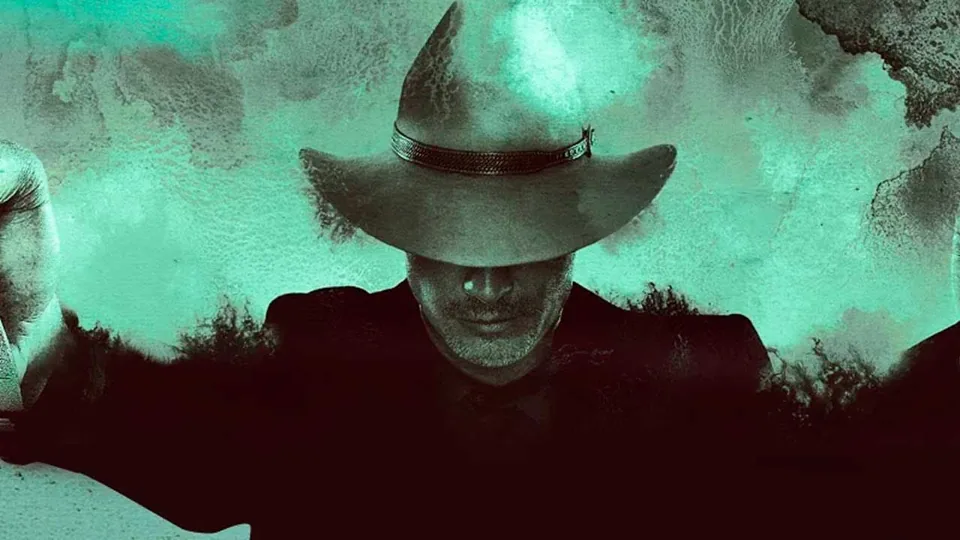

A sombra de Yellowstone é longa e a série estrelada por Kevin Costner para a Paramount+ ainda deve permanecer na boca do povo por muitos anos. O sucesso levou à produção de duas séries sequenciais, 1883 e 1923, com a segunda delas estreando sua 2ª temporada em 23 de fevereiro de 2025, e novos spin-offs também em desenvolvimento.
Então, embora a série de faroeste tenha se despedido, o universo televisivo de Taylor Sheridan continua crescendo e o interesse de seus fãs não apenas permanece intacto, mas continua ganhando seguidores à medida que a série chega a outros canais de distribuição.
No entanto, se você está por dentro de Yellowstone e quer tentar a sorte com outra produção excelente, deve conhecer esta joia do gênero que foi um sucesso total em sua exibição original há uma década: Justified, um thriller neo-western estrelado por Timothy Olyphant e criado por Graham Yost — agora showrunner do também bem-sucedido Silo — que estreou em 2010 na FX e foi ao ar por cinco temporadas até 2015.
Justified está disponível na íntegra no Disney+, e se você gostou de Yellowstone, definitivamente deve dar uma chance: foi aclamado pela crítica e, de fato, tem uma pontuação quase perfeita de 97% no Rotten Tomatoes, em comparação com os 83% de Yellowstone.
Na série, o marechal Raylan Givens é um policial da velha guarda, acostumado a aplicar sua versão de "justiça" sem medo de sacar uma arma rapidamente se a situação exigir, atitude que faz de Raylan um homem impopular tanto entre os criminosos quanto entre seus superiores. Após um conflito, ele é transferido para sua cidade natal, no Kentucky, onde vivem sua ex-esposa, seu pai, que está preso, e seu amigo de infância, agora um terrorista nazista.
Sete anos após seu final, em janeiro de 2022, a FX anunciou a continuação da série: Justified: Cidade Primitiva, com Olyphant de volta ao papel-título, que foi ao ar por uma única temporada em 2023.